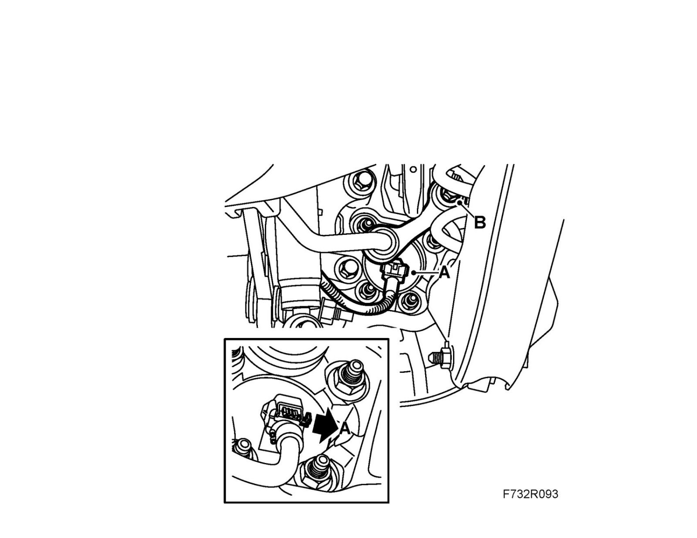

Stabilizer Link: Service and Repair
Anti-roll bar link, replacementTo remove
1. Raise the car.
2. Remove the appropriate rear wheel.
3. Unplug the wheel sensor connector (A).

4. Remove the anti-roll bar screw (B) from the steering swivel member.
5. Remove the anti-roll bar link:
- Lubricate the damping rubber with Vaseline, non-acidic.
- Press the link away from the anti-roll bar using a suitable tool.
To fit
1. Fit a new link to the anti-roll bar:
- Lubricate the damping rubber with Vaseline, non-acidic.
- Press the link into the anti-roll bar using a suitable tool. Check that the link is correctly aligned on the anti-roll bar.
2. Fit the anti-roll bar link onto the steering swivel member using a new screw (B).
Tightening torque 53 Nm (39 lbf ft)
3. Plug in the wheel sensor connector (A).
4. Fit the Wheel.
5. Lower the car to the floor.